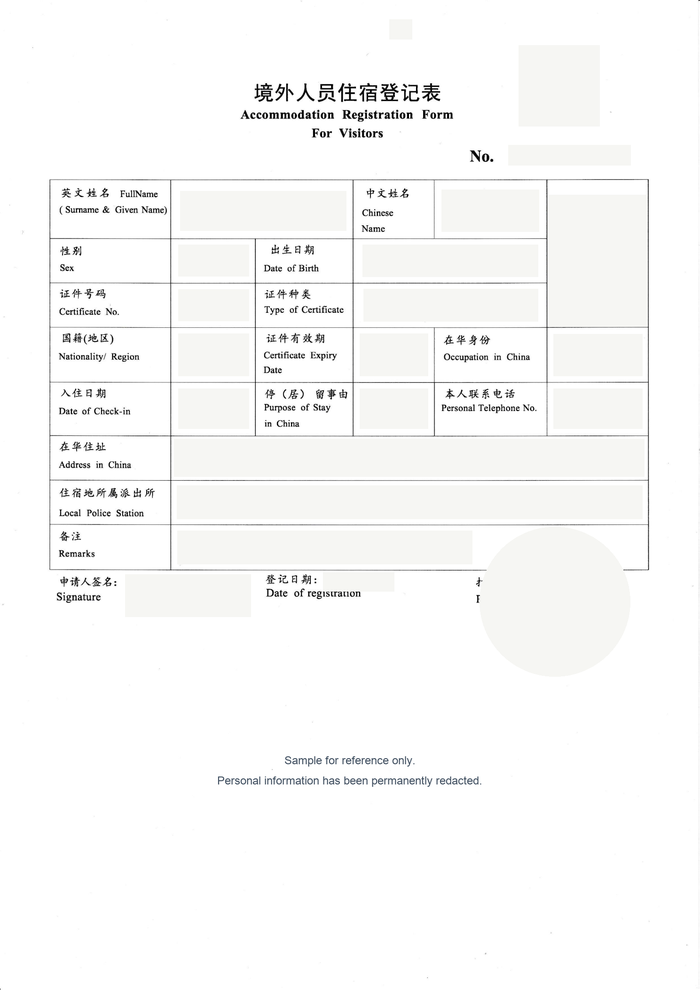

Registration Time
For non-hotel accommodation, Article 39 specifies registration within 24 hours after arrival at the accommodation. Check the NIA’s limited re-registration exceptions when returning to the same residence.
GUIDE & REAL SAMPLE
A practical guide to accommodation registration for foreigners in China, including registration requirements, real form samples, common issues, and its relevance to China Police Clearance Certificate applications.

UNDERSTAND THE DOCUMENT
A China residence registration form records a foreign visitor’s accommodation address, stay period and identity information in China. It is also commonly called an Accommodation Registration Form or Temporary Residence Registration Form. It relates to accommodation registration with the relevant public security authority; paper forms and online records can differ.
It may support visa, residence or document-verification procedures, including a China PCC application where requested. It is not a residence permit, household registration record or police clearance certificate.
Former China residents, visa or residence applicants, students and employees may need to verify accommodation history. Records can also help case reviewers, law firms or HR teams understand where and when an applicant stayed. The evidence required depends on the relevant procedure.
Distinguish hotel reporting from registration for apartments, dormitories and other non-hotel accommodation. Follow current official instructions for your circumstances.
For non-hotel accommodation, Article 39 specifies registration within 24 hours after arrival at the accommodation. Check the NIA’s limited re-registration exceptions when returning to the same residence.
Use the local public security registration channel or the NIA’s nationwide online service for non-hotel accommodation. A city-specific local app may have a different scope.
Hotels register their guests. For non-hotel accommodation, the foreigner or host completes registration. Check the official rules on host assistance for an initial online registration.
Prepare your identity document and accommodation details, plus any supporting records the relevant channel requests. Requirements for identity checks and supporting materials should be confirmed before submission.
The NIA introduced nationwide online non-hotel accommodation registration on 21 September 2026, alongside the existing offline channel. Its interpretation explains host assistance, record inquiry and specific re-registration exceptions. Use these national instructions rather than treating an earlier local pilot as the only available route.
NIA announcement → Scope, exceptions and practical guidance →
A REAL DOCUMENT, SAFELY SHARED
This real historical form is titled 境外人员住宿登记表 — Accommodation Registration Form for Visitors. The layout is original; personal details and identifying verification information have been permanently removed.
The original table contains labels for the following information. Their presence on this sample does not mean every city uses the same fields.
The portrait, QR code, serial number and seal identifiers are also removed. No official seal has been recreated. Do not use this redacted example as an application document.
View Full SampleWebP image · 1489 × 2105 · Zoom available
For your own record, check identity details, address, relevant dates and the issuing information. Match the period with the receiving authority’s request. Confirm whether a copy, translation or notarized copy is required for overseas submission.
A lost paper copy, a missing historical record and failure to register are different issues. Establish what happened before choosing a next step.
Contact the relevant local public security authority promptly. Failure to register as required can lead to a warning and may lead to a fine. Do not assume late registration or a backdated record will be available.
Ask whether an existing record can be located or a copy provided. Identify the affected city and dates, and gather available passport, visa, school or employer records for review. These are not automatic substitutes.
Missing-record guidance →Check accommodation records for each relevant city and period. One form may not establish the full residence history required for a later application.
Explore city guides →Historical-record requests may involve identity checks and locally permitted procedures. Contact the relevant authority or former accommodation provider; remote retrieval and retrospective records cannot be guaranteed.
PCC after leaving China →Accommodation registration may help the relevant authority verify where and when a foreign applicant lived in China. It can help identify the appropriate city route and the residence period to review.
Chinese cities may apply different PCC material and verification requirements. Do not treat this form as an absolute nationwide prerequisite, or assume a notarial document or other evidence will automatically replace a missing record.
Where records are incomplete, review the affected cities and periods, passport history and the evidence still available. Any possible route remains subject to the relevant authorities’ requirements.
Residence evidence may be relevant when preparing China documents for Canada, the United States, Australia, the United Kingdom, Germany, France, New Zealand, Singapore or other destinations. Requirements depend on the actual receiving authority; this is not a list of countries that universally require this form.
Practical answers about registration, record formats and their possible use in later document applications.
Not always, but it is often useful for confirming city, stay period and local records. The documents accepted for a China PCC application depend on the relevant local authority; a residence registration form is not a single nationwide mandatory checklist item.
Possibly. The key is whether it supports the relevant stay period and matches your identity documents. Keep earlier records as well as your latest form, and check what period the receiving authority needs.
Ask the relevant local public security authority or your former accommodation provider whether an existing record can be located or a copy provided. Other residence, study, work or passport evidence may help an individual review, but these documents are not automatically accepted as substitutes.
It is a registration record showing where a foreign visitor or resident stayed in China. It is often issued or registered through a local police station, hotel or approved accommodation system. Accommodation Registration Form and Temporary Residence Registration Form are commonly used English names; paper and online records can look different.
Residence registration can help confirm where and when a foreign applicant lived in China, which may affect the city route for a police clearance certificate. It does not itself certify a criminal-record check.
Not having the original registration form does not automatically mean you cannot apply for a China PCC. However, each case needs to be reviewed individually. The possible application route depends on the relevant authority’s requirements, your residence history and the records available for verification. Other documents are not automatically accepted as substitutes, and the outcome cannot be guaranteed.
No. Format, language, fields and issuing procedures can vary by city and by the accommodation registration method. This historical paper sample is not a current nationwide template.
Article 39 distinguishes hotels from other accommodation. Hotels handle registration and report it to the local public security organs. For non-hotel accommodation, the foreigner or the person accommodating them must complete registration as required. This does not mean every visitor must personally attend a police station.
For non-hotel accommodation, Article 39 provides a 24-hour registration requirement after arrival at the accommodation. The NIA also identifies limited circumstances in which re-registration after returning to the same residence is not required. Check its current guidance rather than assuming every return requires a new registration.
For non-hotel accommodation, nationwide online registration is available through the NIA Government Service Platform channels; the local public security registration channel remains available. Use the current official instructions for identity checks, accommodation details and host assistance. A particular city’s local app is not necessarily a nationwide channel.
This sample includes labels for identity details, accommodation address, check-in and registration dates, a local police station and other fields. The personal values, portrait, QR code, document serial and seal identifiers have been permanently removed. Other cities and online records may show different fields.
Contact the relevant local public security authority promptly for guidance. Failure to register as required can lead to a warning and may lead to a fine. Do not assume that late registration, a backdated record or an exemption from penalties will be available.
A request for an existing historical record is different from making a new registration or correcting a past omission. Availability, identity verification and any permitted representative procedure must be checked with the relevant authority or accommodation provider. Historical records cannot be guaranteed.
Continue with the topic relevant to your situation.
Official registration sources: NIA announcement and policy interpretation. Checked 18 November 2026. Historical-record retrieval and individual PCC eligibility must be confirmed separately.
APPLICATION ASSISTANCE
Our team can review your situation and assist with document preparation, including residence registration records, PCC applications, translation, notarization and legalization where applicable.